Naganuma
Naganuma · Hokkaido
Naganuma
Highlighted on the Hokkaido map.
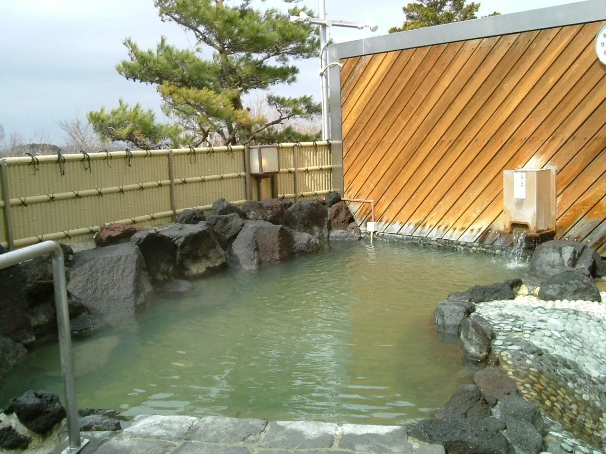
Stay
ながぬま温泉
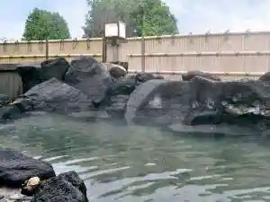
Naganuma Onsen
Cottage La OAK
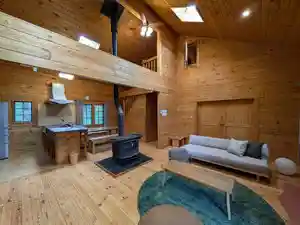
Cottage La Oak
フェアフィールド・バイ・マリオット・北海道長沼マオイの丘公園
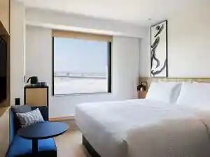
Feafiirudo Bai Mariotto Hokkaidou Naganuma Maoi No Oka Kouen
瀾山ホテル LANSHANHOTEL 瀾山酒店
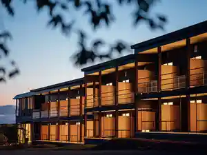
Ran Yama Hoteru Lanshanhotel Ran Yama Saketen
Dining
ピッツェリア トニーノ 北海道 長沼
Pittsueria Toniino Hokkaidou Naganuma
華龍 白石亭
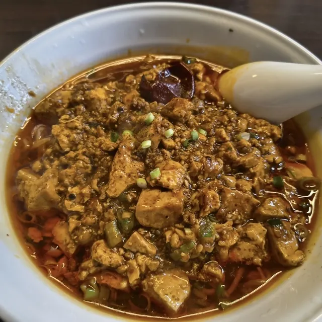
Hana Ryuu Shiroishi Tei
暁 ひみつのパン屋さん
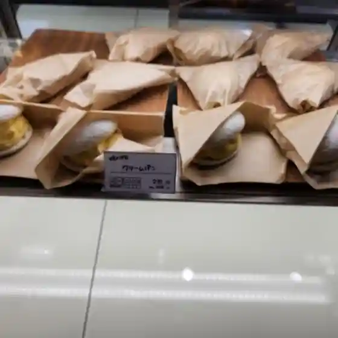
Akatsuki Himitsuno Pan Ya San
遊来ランド
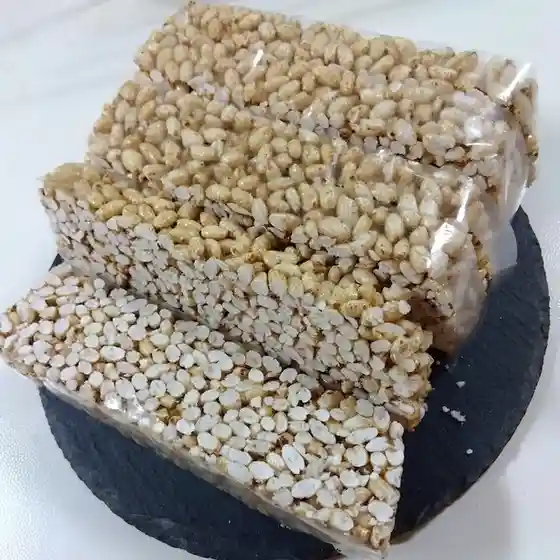
Yuu Rai Rando
Caleidoscopio
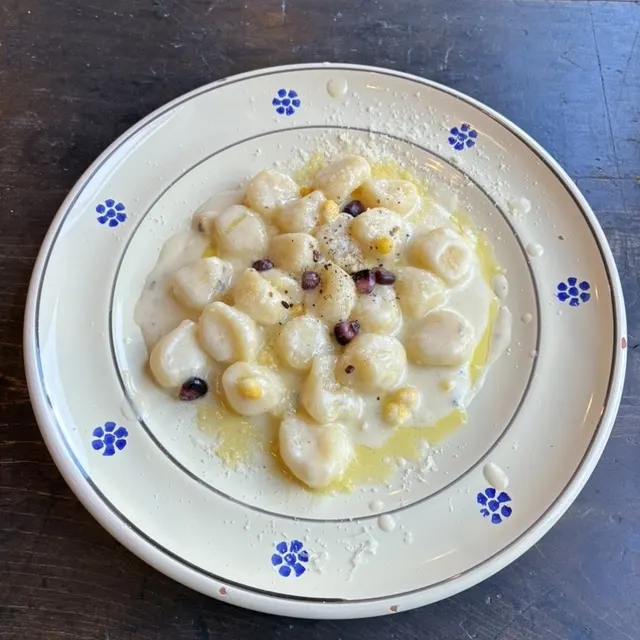
Caleidoscopio
いしかわぱん
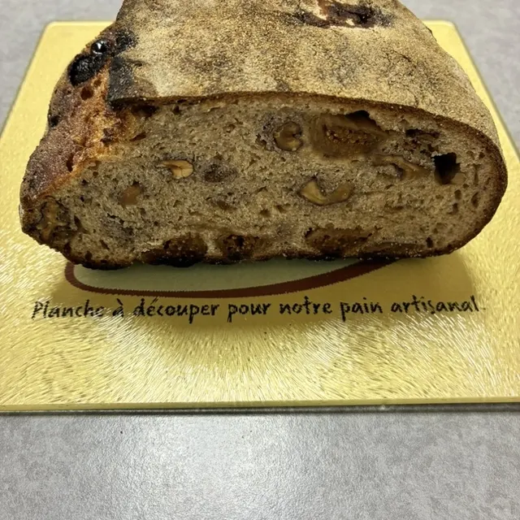
Ishikawapan
香丹

Kaori Tan
松村農場
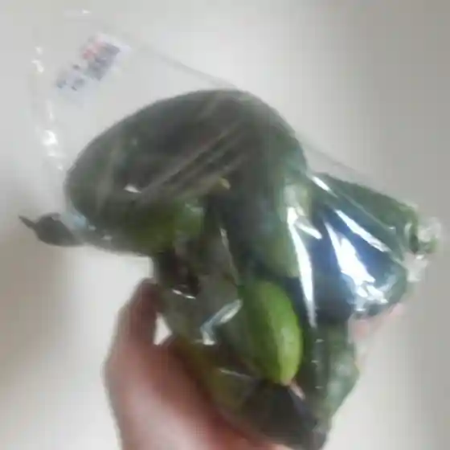
Matsumura Noujou
ぱん工房陽風堂
Pan Koubou You Kaze Dou
あいチュらんど
Ai Chu Rando
Aコープ ながぬま店
A Koopu Naganuma Mise
ワイルドハーブ
Wairudohaabu
こぐま座
Koguma Za
Moss Garden
Moss Garden
いろり
Irori
暁 patisserie FURUTA
Akatsuki Patisserie Furuta
ながぬま とうふ工房
Naganuma Toufu Koubou
BonFam
Bonfam
カフェ コフェル
Kafe Koferu
瀾山ホテル
Ran Yama Hoteru
我夢舎楽
Ware Yume Sha Raku
ファームキトラ 農産物直売所 ベジっこ
Faamukitora Nousanbutsu Chokubai Tokoro Beji Kko
りんごとポテト
Ringoto Poteto
ベジベリー
Bejiberii
Sights
Naganuma Onsen
Naganuma Onsen
Aisu no Ie to Etosetora Naganuma Main Shop
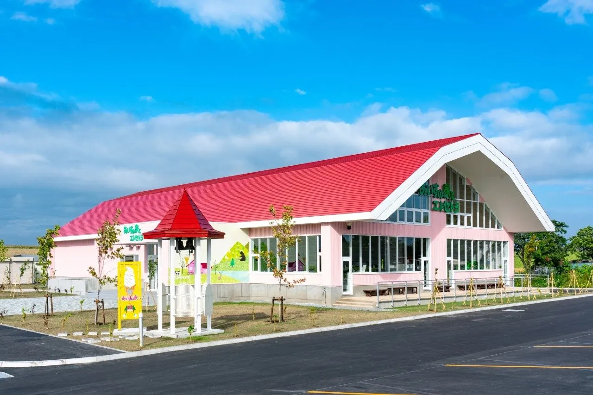
Aisu no Ie to Etosetora Naganuma Main Shop
Umaoi Joryu Tokoro
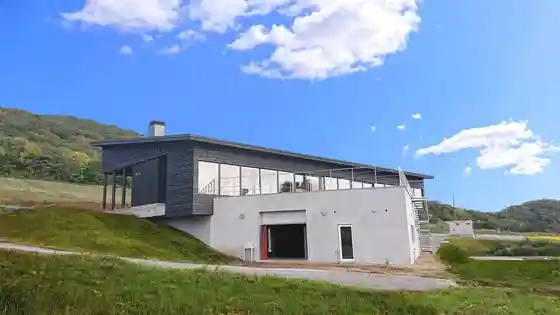
Umaoi Joryu Tokoro